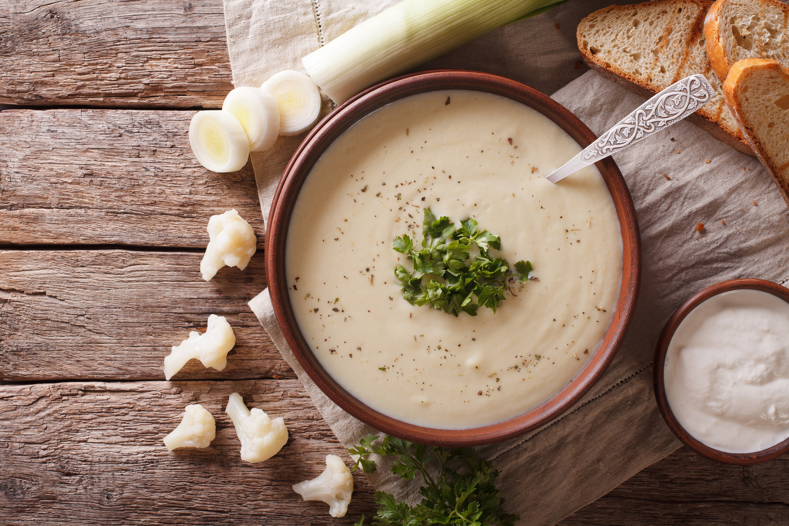

Creme Du Barry

Description
It was created for ma'ame Du Barry, King Louis XV's last & favourite mistress,
who adored cauliflower.
Ingredients
- 2 teaspoons olive oil
- 1 teaspoon butter
- 2 leeks, washed and white part chopped
- 1 head cauliflower, broken up
- 1 potato, cubed
- 6 cups chicken stock
- 1 teaspoon garlic powder
- salt, pepper
- 2 tablespoons parsley, chopped
Steps
-
Add oil and butter to pan and heat. Add leeks and cook on low for 10
minutes.
-
Add cauliflower, potatoes and stock. Stir. Season with salt,pepper, garlic.
-
Cover and bring to a boil. Then simmer for about 20 min or until cauliflower
and potatoes are soft. Cool slightly.
-
Puree in a blender or food processor until smooth. Careful! You might have
to do that in batches. Return to pan and heat. Check for seasoning. You
might have to add some chicken stock or milk to adjust consistency.
- Pour into soup bowls and garnish with chopped parsley.